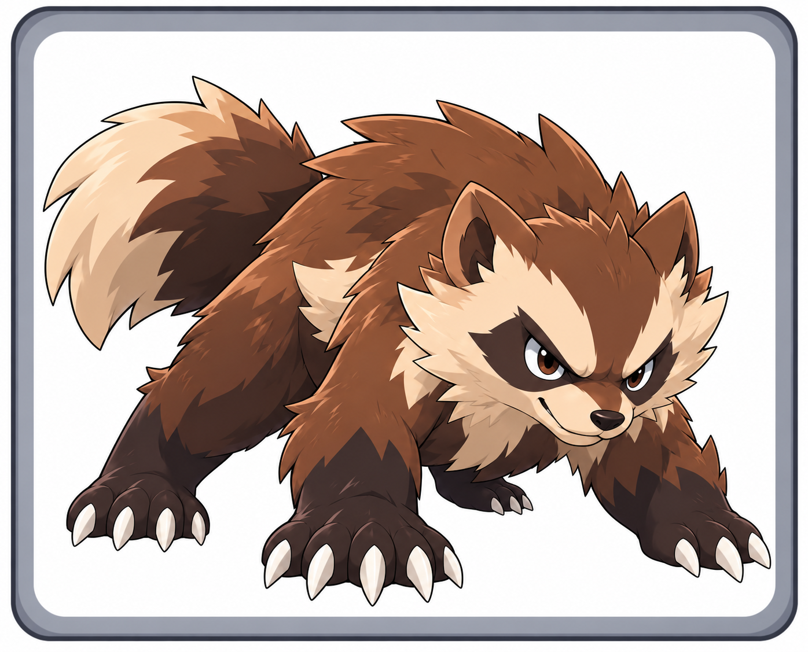
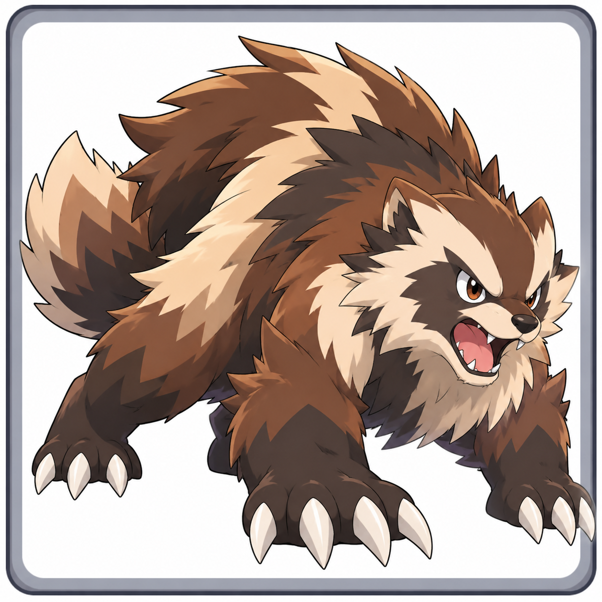
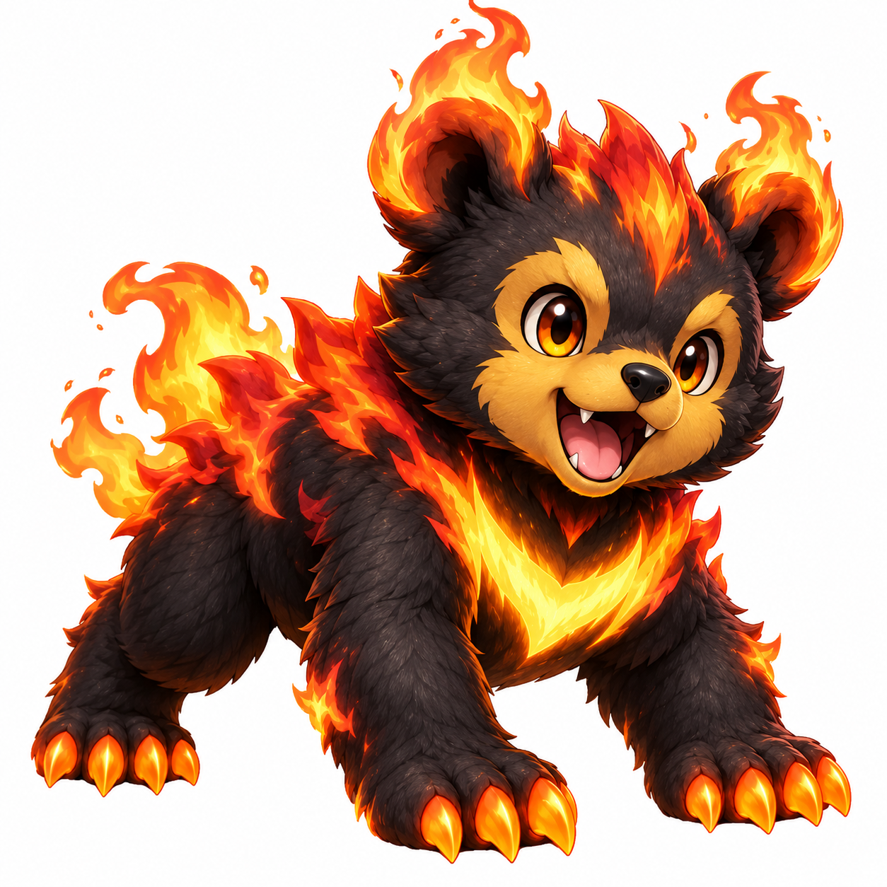

Discover the Everwild Pokédex
We're designing an original collection of Fakemon, one species at a time. Our regional Pokédex has no fixed size.
Starter concept: 18 starter lines, one for each type. At the professor's lab, three starters of different types are selected randomly; the player chooses one.

Wolvyn
NORMALThe Scrappy Pokémon
Wolvyn is small, but it never backs down from a challenge. It fearlessly takes on Pokémon much larger than itself, using its sharp instincts and quick movements to get the upper hand. Its playful and mischievous nature often gets it into trouble, but its determination always helps it push through.
Height: 0.4 m · Weight: 7.8 kg
Evolution: Stage 1 of 3

Wolvigor
NORMALThe Tenacious Pokémon
Wolvigor's strength and endurance have grown dramatically. Highly territorial, it relentlessly pursues perceived threats and challenges larger opponents.
Height: 0.8 m · Weight: 28.5 kg
Evolves from Wolvyn at Level 17

Wolvage
NORMALThe Relentless Pokémon
Wolvage never backs down from a challenge. Its incredible stamina and powerful claws allow it to overcome foes far stronger than itself.
Height: 1.4 m · Weight: 82.0 kg
Evolves from Wolvigor at Level 35

Solcub
FIREThe Ember Cub Pokémon
Solcub is a playful and energetic Pokémon whose flames react to its emotions. Its crescent-shaped chest marking stores solar energy.
Height: 0.5 m · Weight: 9.5 kg
First evolution: Level 18 · Final evolution: Level 36

Solbruin
FIREMiddle evolution
An adolescent sun bear with powerful forelegs, glowing claws and an increasingly radiant solar chest marking.
Height: 0.9 m · Weight: To be determined
Evolves from Solcub at Level 18

Solursus
FIREFinal evolution — design in progress
The final evolution of Solcub's solar-powered Fire starter family. Further details are in development.
Height and weight: To be determined
Evolves from Solbruin at Level 36
💡 Ideas Board · Detailed idea notes · Pokédex data · GitHub repository